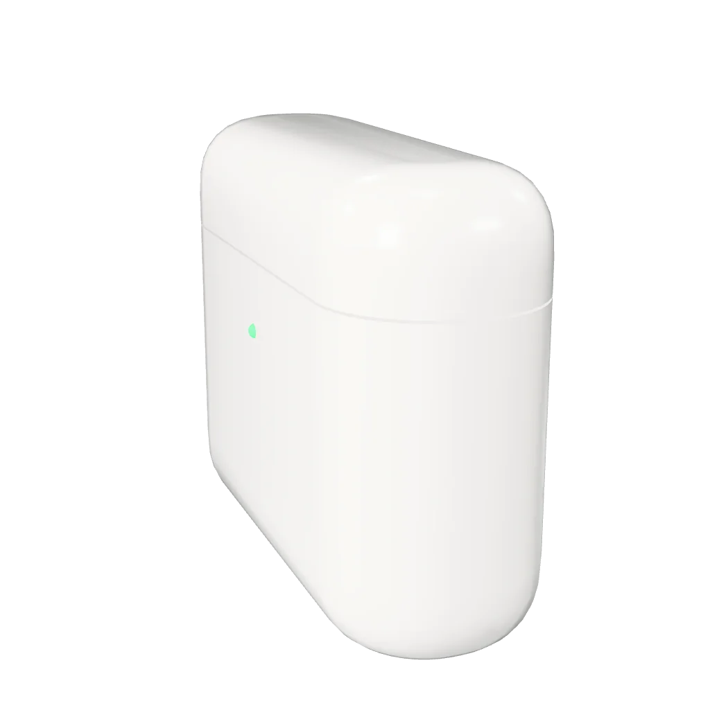

Характеристики
Модель: рецепт 01 (build(P) в Blender 5.2.2), 1 976 треугольников, без текстур, 12 КБ после meshopt.
Кейс заряжает на 24 часа. Текст, цена и кнопка — в HTML: страница работает и без 3D.
Купить
Модель: рецепт 01 (build(P) в Blender 5.2.2), 1 976 треугольников, без текстур, 12 КБ после meshopt.